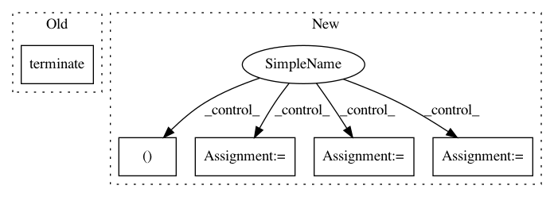

31bfc7c1ce9dac771dbd5e2edf2d5e789d8b1aaa,evaluate.py,,from_pipe,#Any#,18
Before Change
pipe_out.stdin.close()
pipe_in.stdout.close()
pipe_out.terminate()
pipe_in.terminate()
del pipe_in
del pipe_out
raise IOError(error)
pipe_out.stdin.close()
After Change
raw_image = pipe_in.stdout.read(width * height * 3)
if len(raw_image) != nbytes:
last = True
X = X[:count]
batch_shape = (count, height, width, 3)
img_placeholder = tf.placeholder(tf.float32, shape=batch_shape,
name="img_placeholder")
preds = transform.net(img_placeholder)
break
image = numpy.fromstring(raw_image, dtype="uint8")
image = image.reshape((height, width, 3))
X[count] = image
count += 1
if read_input:
if last:
read_input = False
In pattern: SUPERPATTERN
Frequency: 3
Non-data size: 5
Instances
Project Name: lengstrom/fast-style-transfer
Commit Name: 31bfc7c1ce9dac771dbd5e2edf2d5e789d8b1aaa
Time: 2016-12-23
Author: jonathan.e.m.bocker@gmail.com
File Name: evaluate.py
Class Name:
Method Name: from_pipe
Project Name: apache/incubator-tvm
Commit Name: f956c38cd73d000769c710165604a1b5297fd1a5
Time: 2020-10-31
Author: areusch@octoml.ai
File Name: python/tvm/micro/debugger.py
Class Name: GdbDebugger
Method Name: stop
Project Name: deepfakes/faceswap
Commit Name: 2b4ae91b02d0b3b42e2a634c4f432df6d20d3b7c
Time: 2018-11-04
Author: 36920800+torzdf@users.noreply.github.com
File Name: lib/gui/wrapper.py
Class Name: FaceswapControl
Method Name: terminate